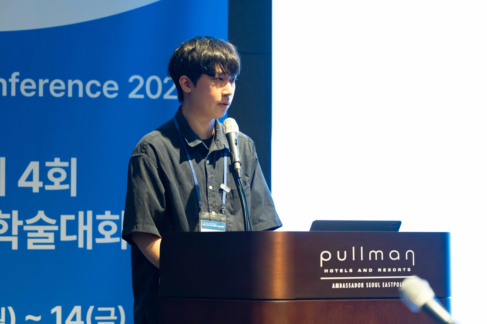

IEEE
ISMAR
ISMAR
Feeling Visual Motion: Mitigating Cybersickness in VR Using Tactile Motion Cues
IEEE ISMAR 2026
View on AXIS Lab ↗
Researcher · Korea University
I am Jaehyeong Hwang, a Research Intern at the Augmented eXperience and Interactive Systems Laboratory (AXIS Lab), Korea University, advised by Prof. Chaeyong Park.
My research focuses on haptics, virtual reality, and human-computer interaction. I am interested in designing tactile interfaces that help people understand and navigate digital environments more naturally.
I design and study tactile interfaces that make virtual experiences more understandable, immersive, and human-centered.
IEEE ISMAR 2026
View on AXIS Lab ↗IEEE Transactions on Visualization and Computer Graphics · IEEE ISMAR 2026
View publication ↗고려대학교 · 인턴
2025년 9월 – 2026년 8월 · 1년
Augmented eXperience and Interactive Systems Laboratory, Korea University
Advisor: Prof. Chaeyong Park
Integrated Master’s and Doctoral Degree, Computer Science and Engineering
2026년 9월 – 2032년 8월
Augmented eXperience and Interactive Systems Laboratory, Korea University
Advisor: Prof. Chaeyong Park
Bachelor’s Degree, Computer Science and Artificial Intelligence
2020년 3월 – 2026년 8월
학점: 4.33/4.5
Summa Cum Laude
IEEE ISMAR · 2026년 10월
Received the Best Paper Award for “Posture-Adaptive Azimuthal Guidance via a Forearm Vibrotactile Interface for VR Navigation.”
Korea Haptics Society · 2026년 8월
Received the award for “Feeling Visual Motion: Mitigating Cybersickness in VR Using Tactile Motion Cues.”
대전광역시장 이장우 · 2024년 2월
2023년 3월 – 2026년 8월
동국대학교에 연결됨
Full tuition and fees for 2 years of undergraduate studies